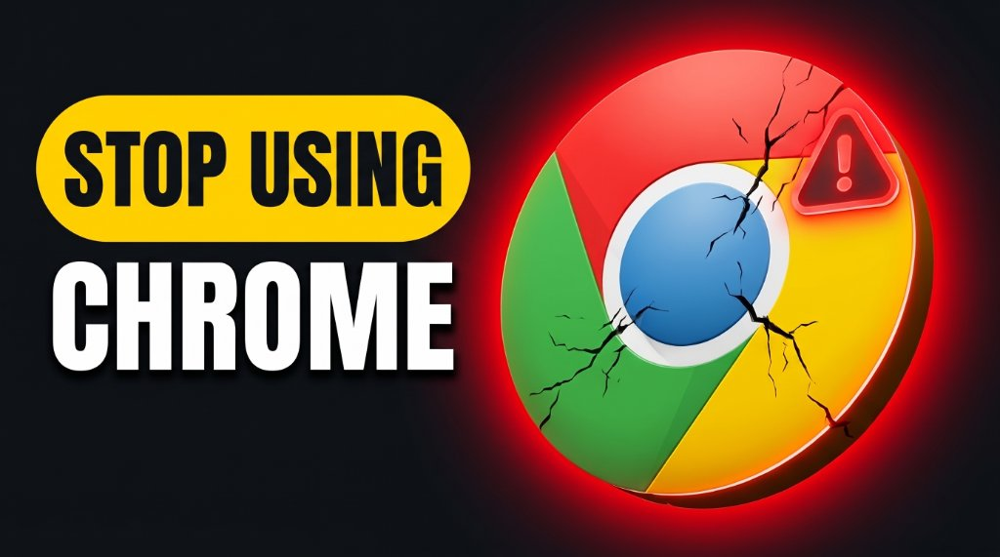
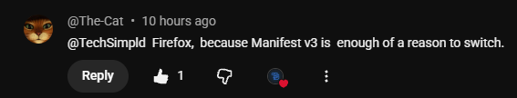
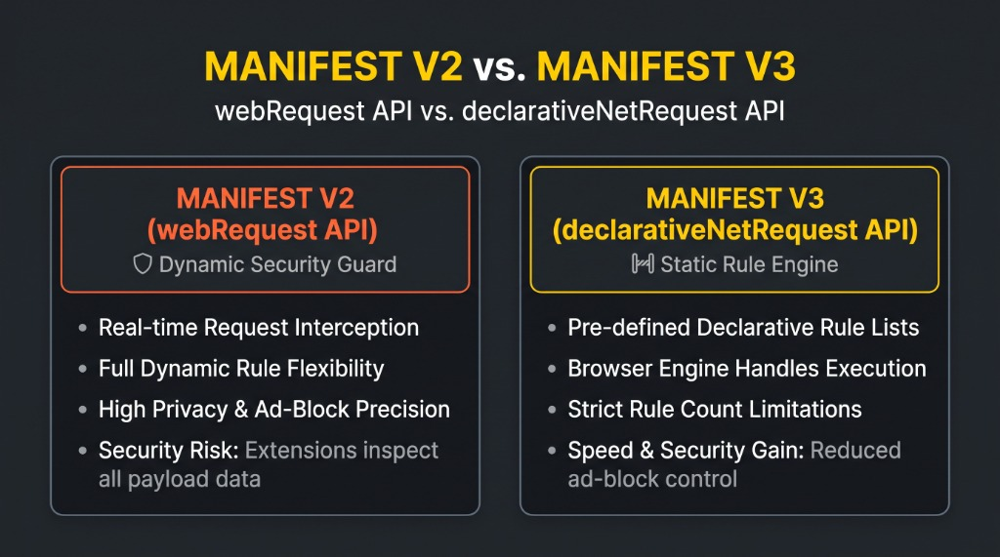
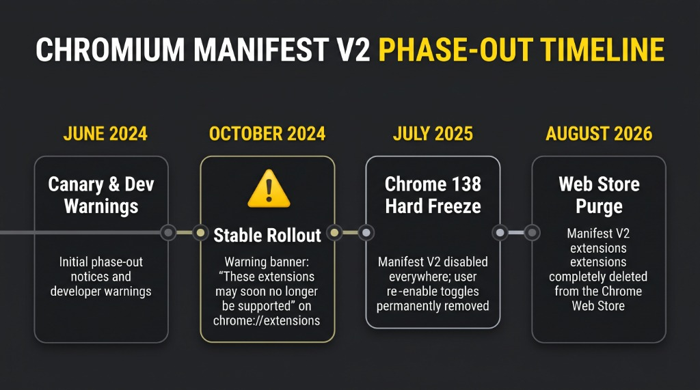

The Honest Truth: Why You Should Stop Using Chrome (Manifest V3 vs. Firefox)

A few days ago, a reader and viewer named @The-Cat left a blunt comment on one of my tutorials that made me stop and laugh: "Never trust a tech guy that uses CHROME." When I asked what they recommended instead, the follow-up was just as direct: "Firefox, because Manifest v3 is enough of a reason to switch."

For years, Google Chrome has held over 65% of global browser market share. Most of us keep it installed out of pure muscle memory: bookmarks sync automatically, passwords autofill, and every web app tests against Chromium first. But over the past two years, Google completed a deep architectural overhaul under the hood called Manifest V3.
Online debates around Manifest V3 quickly polarized into two extremes. Critics warned it would kill ad blocking outright; Google pitched it as a pure win for speed, security, and privacy. Instead of repeating internet tribalism, I tested both browsers side by side to see what Manifest V3 actually changed, what broke in daily browsing, and whether switching to Firefox is genuinely worth your time in 2026.
Manifest V2 vs. Manifest V3: What Changed Under the Hood
Every browser extension ships with a manifest.json file. Think of it as both a blueprint and a permission slip that tells the browser what APIs the extension is allowed to call. For more than a decade, Chromium extensions ran on Manifest V2.

How Manifest V2 Worked (webRequest API)
Under Manifest V2, content blockers like classic uBlock Origin relied on the blocking webRequest API. It acted like a private security guard standing directly between your browser and the internet. Every time a page tried to fetch an ad script, tracking pixel, or third-party frame, the extension inspected the request in real time and blocked it before the payload ever touched your screen.
Google pointed to two legitimate technical concerns with that model:
- Overbroad data access: A malicious or compromised extension holding
webRequestpermissions could theoretically inspect sensitive headers or form payloads crossing the network. - Performance overhead: Poorly written extensions running synchronous JavaScript checks on every network request could slow down page loads and increase memory usage.
How Manifest V3 Works (declarativeNetRequest API)
With Manifest V3, Google removed the blocking version of webRequest for standard extensions and replaced it with declarativeNetRequest (DNR). Instead of letting the extension evaluate traffic dynamically, the extension hands Chrome a pre-packaged static list of rules, and Chrome's internal C++ engine decides what gets blocked.
On paper, that sounds cleaner and faster. In practice, it introduces hard rule-count caps, restricts dynamic procedural filtering, and shifts decision-making power away from open-source developers directly to the browser vendor, which happens to be the world's largest advertising company.
| Capability | Manifest V2 (webRequest) |
Manifest V3 (declarativeNetRequest) |
|---|---|---|
| Filtering Engine | Dynamic real-time inspection by extension | Static rule lists executed by browser engine |
| Rule Limits | Effectively unlimited (RAM-bound) | Strict static and dynamic rule caps |
| Filter List Updates | Near-instant background list updates | Often gated by extension packaging & Web Store review |
| Live Network Logger | Full real-time request logger in uBlock Origin | Not available in uBlock Origin Lite |
| Browser Support (2026) | Firefox (first-class), Brave (hosted MV2) | Chrome, Edge, Opera, Chromium derivatives |
The Complete Manifest V2 Phase-Out Timeline (2024 to 2026)
Google did not flip the switch overnight. Years of pushback from developers and privacy advocates delayed the schedule multiple times, but between mid-2024 and late 2026 the phase-out reached its final stage.

- June 2024 (Canary & Dev Warnings): Google began displaying deprecation notices on pre-release channels and warning extension developers to migrate.
- October 2024 (Stable Rollout): Everyday Chrome users started seeing "These extensions may soon no longer be supported" banners on
chrome://extensions, with temporary toggles to re-enable classic extensions like uBlock Origin. - July 2025 (Chrome 138 Hard Freeze): Manifest V2 extensions were disabled across standard Chrome builds and the user re-enable toggle was permanently removed, followed by the phase-out of enterprise policy overrides.
- August 2026 (Chrome Web Store Purge): Remaining developer bypass flags were stripped from Chromium and legacy Manifest V2 listings were removed from the Chrome Web Store.
If you open standard Google Chrome today, classic uBlock Origin is dead. You can only install its Manifest V3 sibling, uBlock Origin Lite (built by Raymond Hill specifically to survive Chrome's DNR restrictions).
Head-to-Head Test: Firefox + uBlock Origin vs. Chrome + uBlock Origin Lite
So did ad blocking die completely on Chrome? No. For basic static banners, uBlock Origin Lite still does a respectable job. The cracks appear once you look at dynamic filtering, cosmetic element hiding, anti-adblock scripts, and how quickly blockers react when a major site changes its ad delivery code.
To measure the real-world gap, I opened Firefox with classic uBlock Origin (MV2) on the left and Chrome with uBlock Origin Lite (MV3) on the right, then ran both against adblock-tester.com.
Test Results Summary
- Firefox + uBlock Origin (MV2): Scored 100 / 100 and blocked 45 requests on page reload.
- Chrome + uBlock Origin Lite (MV3): Scored 91 / 100 and blocked only 28 requests on page reload.
- What slipped past Chrome: Scrolling through the individual test breakdown revealed that the failing section on Chrome was Google AdSense. Under rules written by Google inside Google's own browser, Google's ad network was the exact category that got through.
Visibility & Power-User Controls
Both extensions still include two handy manual cleanup tools:
- Element Zapper: Temporarily hides an annoying banner or overlay on the current page (it returns on refresh). Both Firefox uBO and Chrome uBO Lite support this.
- Element Picker: Lets you click a page element and save a persistent cosmetic rule so it stays hidden across reloads. Both extensions support this as well.
Where Chrome falls short is real-time inspection. In Firefox with classic uBlock Origin, you can open the built-in Logger, reload a page, and watch every single blocked and allowed network request in real time. That is essential when a site breaks because of an over-aggressive filter or when you want to see which third-party trackers a web app is calling. Chrome's Manifest V3 architecture does not expose that live request stream to uBlock Origin Lite.
The update cadence is also fundamentally different. When YouTube or a major media site ships a new anti-adblock script, uBlock Origin on Firefox can pull an updated filter list in minutes and patch it automatically. Under Manifest V3, rule changes frequently have to wait for a full extension package update to clear Chrome Web Store review.
What About Microsoft Edge, Opera, and Brave?
Whenever Chrome's restrictions come up, the first question is always: "Can I just switch to Microsoft Edge or Opera?"
The catch is that Edge, Opera, Vivaldi, and Arc are all built on Chromium, Google's open-source browser engine. When Google removes an API upstream in Chromium, downstream Chromium browsers are pulled along with it unless they maintain expensive custom patches. Moving from Chrome to Edge does not escape Manifest V3.
- Brave (The Chromium Exception): Brave is the standout option if you strictly need Chromium compatibility. Its built-in Brave Shields ad blocker is written directly into the browser's native C++ and Rust code, bypassing the extension API entirely. Brave also hosts classic Manifest V2 uBlock Origin on its own servers for users who still want it.
- Firefox (The Independent Engine): If you want a mainstream browser completely independent of Google's engine, Firefox (Gecko) is the only major player left. Mozilla made an explicit commitment to support modern Manifest V3 APIs while retaining full blocking
webRequestsupport, so extensions like uBlock Origin keep their full capabilities without compromises.
How to Switch from Chrome to Firefox in Under 5 Minutes
Migrating browsers used to mean an afternoon of broken logins and lost bookmarks. Today it takes less than five minutes:
- Install Firefox and run the Import Wizard: On first launch (or under Settings > General > Import Data), select Google Chrome. In roughly 30 seconds, Firefox copies your bookmarks, saved autofill entries, browsing history, and open tabs.
- Install classic uBlock Origin: Open Firefox Add-ons (
about:addons), search for uBlock Origin by Raymond Hill, and install it. No Lite compromises required. - Use a browser-independent password manager: If you store passwords in Bitwarden, Vaultwarden (self-hosted), or KeePassXC instead of Chrome's built-in sync, you never get locked into a single browser vendor again.
- Layer network-level DNS blocking on top: Browser blockers handle cosmetic frames and first-party scripts, while a local DNS sink like AdGuard Home or Pi-hole strips telemetry across your phones, smart TVs, and IoT devices before a request ever leaves your LAN.
The Honest Trade-Offs of Leaving Chrome
No browser switch is 100% frictionless, and it is worth being upfront about the minor trade-offs:
- Google Workspace quirks: Google Meet, Google Docs, and a handful of enterprise web apps occasionally roll out new features (like specific video effects or WebGPU flags) to Chromium first.
- Work-mandated Chromium apps: If your day job requires a Chrome-only internal portal, keep a clean secondary profile or Brave installed strictly for that work app while moving your personal browsing to Firefox.
For 95% of everyday browsing, Firefox feels just as responsive, uses noticeably less RAM across heavy tab sessions, and keeps control of your browser in your hands instead of an ad network's.
Frequently Asked Questions
Does classic uBlock Origin still work in Google Chrome in 2026?
No. After the Chrome 138 hard freeze in July 2025 and the Chrome Web Store purge of Manifest V2 extensions in August 2026, classic uBlock Origin no longer runs on standard Google Chrome. Chrome users must use Manifest V3 alternatives such as uBlock Origin Lite.
What is the main difference between uBlock Origin and uBlock Origin Lite?
Classic uBlock Origin uses the blocking webRequest API for real-time dynamic filtering, instant filter list updates, and a live network request logger. uBlock Origin Lite uses Manifest V3 declarativeNetRequest static rule lists, which have strict rule caps, slower Web Store review cycles for rule updates, and no live logger.
Does switching to Microsoft Edge or Opera avoid Manifest V3?
No. Edge and Opera are built on Chromium and inherit Google's Manifest V3 extension restrictions. Brave avoids the extension bottleneck with its native C++/Rust Shields engine, while Firefox is the only major independent engine (Gecko) that retains full blocking webRequest support.
Can Pi-hole or AdGuard Home replace a browser ad blocker?
DNS blockers and browser blockers solve different layers of the problem. Pi-hole and AdGuard Home block tracking domains across your entire home network, but they cannot inspect page HTML or strip first-party ads served from the same domain (like YouTube video ads). Running Firefox + uBlock Origin alongside local DNS filtering gives you complete coverage.
Key Takeaways & Next Steps
At the end of the day, the Manifest V3 debate is not only about whether a test page scores 100 or 91. It is about who controls the software running on your computer. Moving to Firefox + uBlock Origin (or Brave if you need Chromium) restores real-time filtering, instant rule updates, and an open web where you decide what loads on your screen.
Pair your browser privacy setup with network-wide lab defenses:
- Read why DNS alone cannot block every ad in The Truth About Pi-hole & YouTube Ads.
- Deploy modern encrypted DNS blocking with our AdGuard Home 1.0 Beta Ubuntu LXC Guide.
- Lock down remote access to your lab with Cloudflare Zero Trust Tunnels.
- Plan clean VLANs for IoT and trusted devices using our IPv4 Subnet & VLAN Calculator.
Watch the full side-by-side test on YouTube: The Honest Truth: Why You Should Stop Using Chrome.